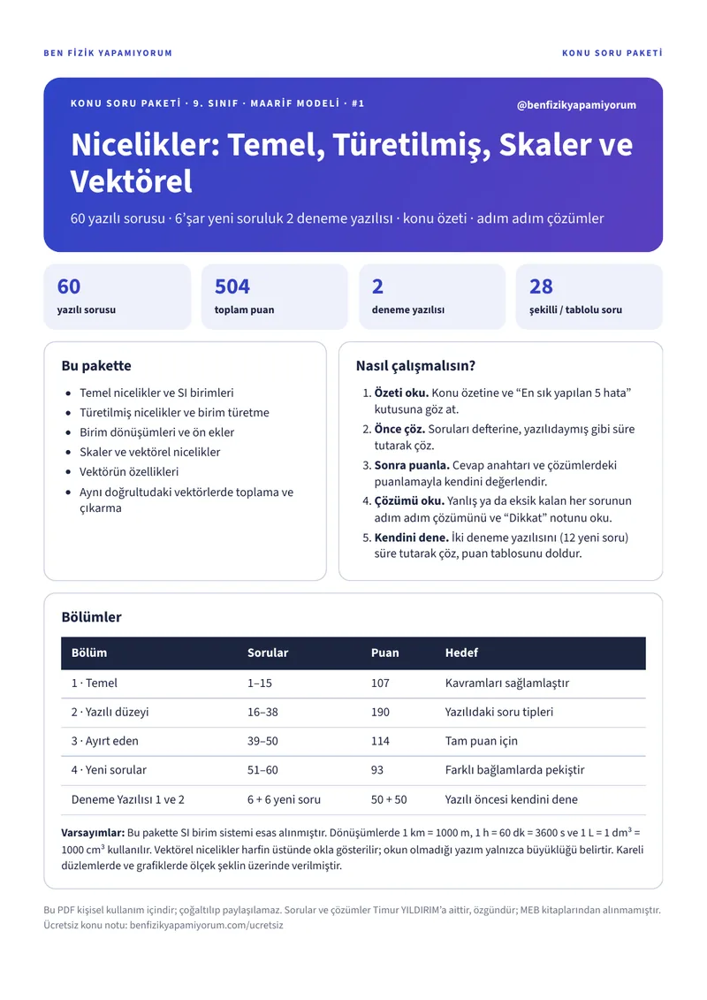
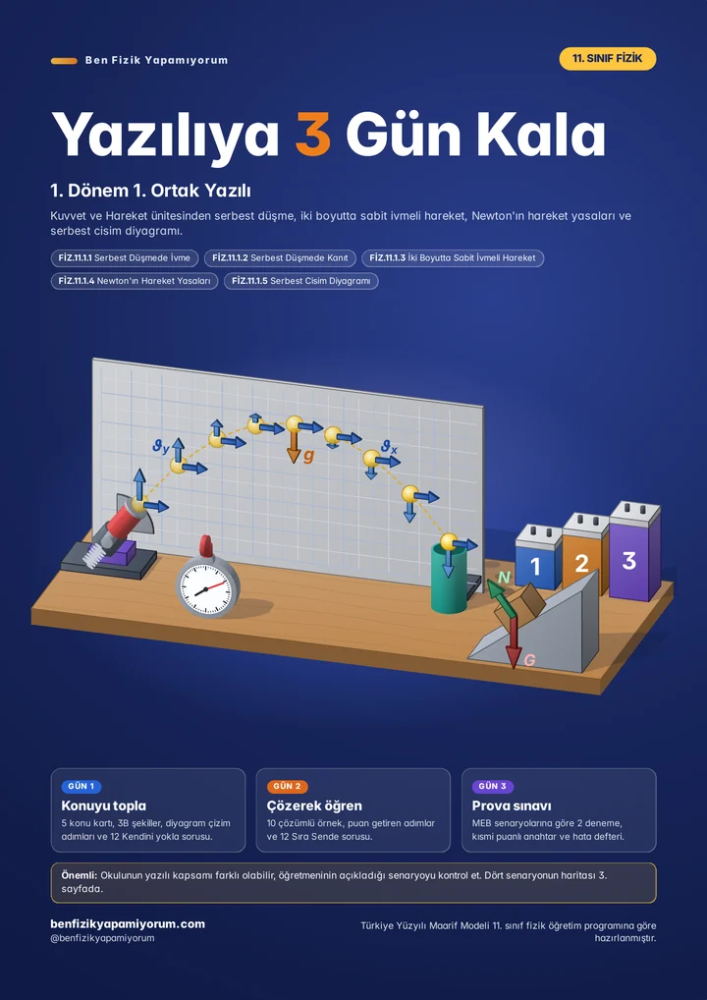
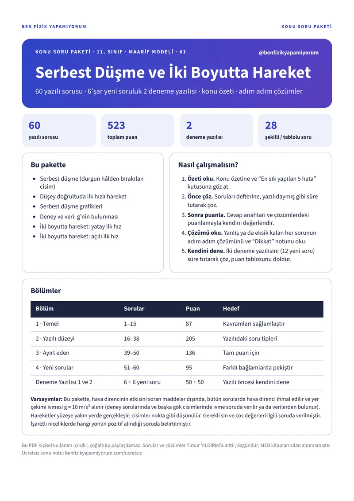
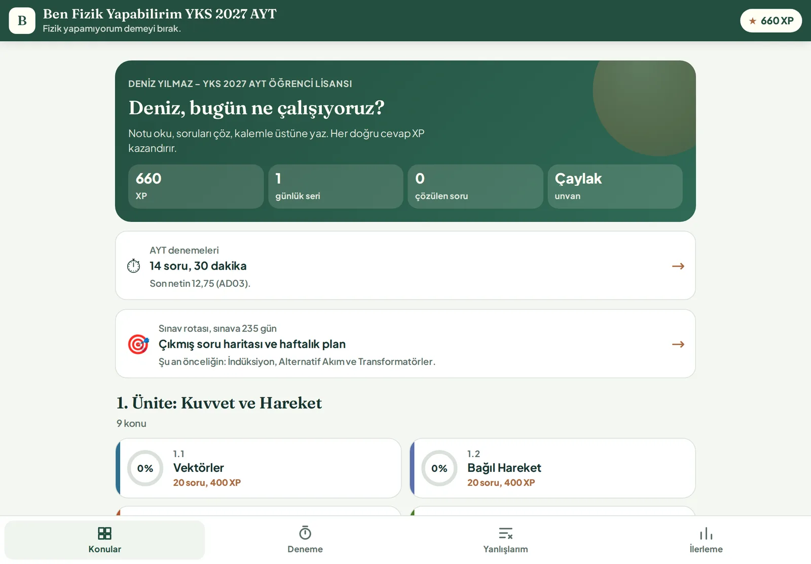
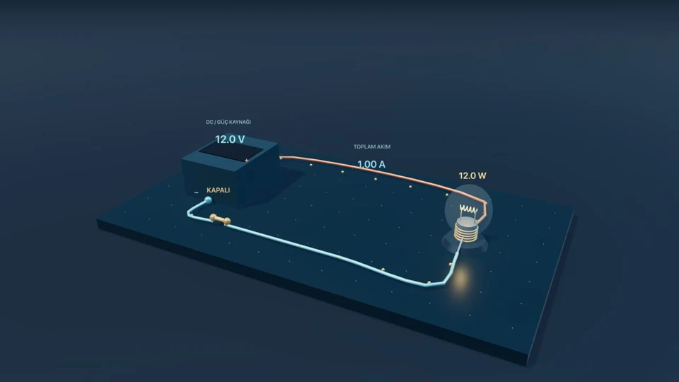
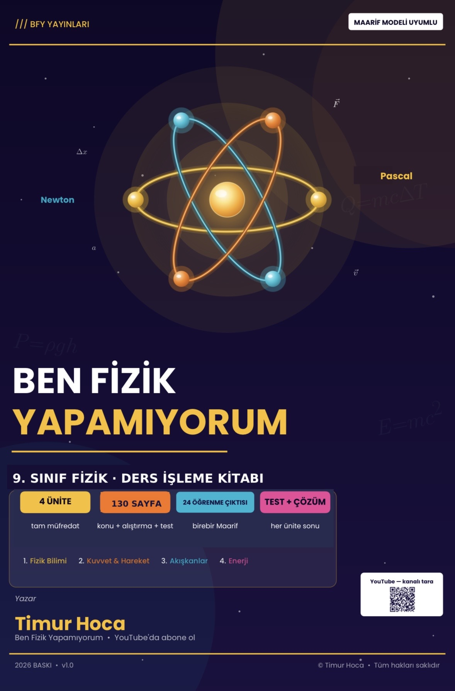

LİSE FİZİĞİ · 9–12. SINIF VE YKS
Lise fiziğini ezberleme. Dene, gör, anla.
9, 10, 11 ve 12. sınıf fizik notları, 3B simülasyonlar, online testler ve yazılı provası tek yerde. Sınıfını seç, sana uygun olanları gösterelim.
Kaçıncı sınıfsın?
9. sınıf: buradan başla
Bu dördü ücretsiz.
Daha düzenli çalışmak istersen



10. sınıf: buradan başla
Bu dördü ücretsiz.
Daha düzenli çalışmak istersen


11. sınıf: buradan başla
Bu dördü ücretsiz.
Daha düzenli çalışmak istersen



12. sınıf ve mezunlar: buradan başla
Bu dördü ücretsiz.
Sınava düzenli hazırlanmak istersen


Bu iki kitap 2018 programına göre hazırlandı, 2027’de sınava girecekler içindir. Maarif müfredatıyla okuyorsan Yapabilirim TYT sana göre.
Öğretmenler: buradan başlayın
Bu dördü ücretsiz.

ÜCRETSİZ FİZİK NOTLARI
Ders notları, yazdırmaya hazır.
ÜCRETSİZ · ETKİLEŞİMLİ FİZİK
Fiziği dene. Sonucu gör.
Bir deneyi aç, değişkenleri değiştir, ne olacağını keşfet. Telefonda, bilgisayarda veya akıllı tahtada.
 3B GARAJ + YARIŞ
3B GARAJ + YARIŞKUVVET · İVME · MOMENTUM
Şahin İvme Yarışı
İki Şahin, tek pist. Kütleyi ve kuvveti değiştir; bitişe kimin önce ulaşacağını tahmin et.
Yarışı aç AĞIR ÇEKİM + GERİ SARMA
AĞIR ÇEKİM + GERİ SARMAÇARPIŞMALAR · MOMENTUM
Çarpışma Stüdyosu
Araçların hızını ve kütlesini seç. Temas anını yavaşlat, çarpışma öncesini ve sonrasını karşılaştır.
Deneyi aç
3B DENEYELEKTRİK · AKIM · DİRENÇ
Elektrik Devreleri
Gerilimi ve direnci değiştir. Seri ve paralel devrelerde akımın nasıl değiştiğini incele.
Devreyi açKEŞFETMEK ÜCRETSİZ
Önce fiziğin tadını çıkar.
Notlar, testler, simülasyonlar ve yazılı provası.
Ücretsiz kaynaklarla çalışmaya başla.
3B simülasyonlar
Değişkenleri değiştir.
Fiziği çalışırken gör.
Online testler
Soruları çöz, sonucunu gör.
Eksiklerini fark et.
Sınıf oyunları
Sınıfça yarış.
Öğrenmeyi oyuna dönüştür.
Konu rehberleri
Anlatım, örnekler ve videolar.
Sınıfına göre ilerle.
Ücretsiz fizik notları
Konu özetleri, çözümlü örnekler ve indirilebilir PDF notları.
Notlara göz atYazılı provası
7 açık uçlu soruyla kendini dene; puanını ve çözümleri gör.
Provaya gitDaha fazla soru isteyenlere: Ücretli Konu Soru Paketleri
KONU KONU FİZİK
Aradığın konu burada.
Konu anlatımları, çözümlü sorular ve yazılı soruları. Hepsi ücretsiz, hepsi Maarif Modeli’ne göre.
9. sınıf fizik
10. sınıf fizik
11. sınıf fizik
KİTAPLAR VE PAKETLER
Daha fazlası lazım olursa.
Ücretsizler yetmediğinde bakarsın. Neye ihtiyacın olduğunu seç, emin olamazsan yaz.
Hepsini görYAPABİLİRİM · DİJİTAL KİTAP
Telefonuna kurulan fizik kitabı.
Konuyu oku, soruyu adım adım çöz, kavram kartlarıyla tekrar et. Tarayıcıda açılır, ana ekrana uygulama gibi eklenir. Telefonda, tablette ve bilgisayarda çalışır.



BASILI KİTAPKargo dahil
LİSEYE YENİ BAŞLAYANLAR İÇİN · 9. SINIF
Liseye güçlü bir başlangıç.
Fiziğe sağlam bir temel.
Yeni Maarif Modeli’ne uygun konu anlatımı ve sorular, elinde tutacağın bir kitapta. Oku, üzerine not al, yazarak çalış. Timur YILDIRIM’ın 9. Sınıf Fizik Ders Kitabı ile ilk yıldan sağlam ilerle.
KARAR VERİRKEN YALNIZ DEĞİLSİN
Birlikte seçelim.
Sınıfını ve neye ihtiyacın olduğunu yaz.
Timur YILDIRIM’a WhatsApp’tan ulaş.
Dijital kitabı nasıl kullanacağım?
Yapabilirim’i telefon, tablet veya bilgisayarın tarayıcısında açarsın. Konu anlatımı, etkileşimli sorular ve çözümlerle çalışır; istersen kitapçık oluşturup yazdırırsın. İlk açılış ve tüm kullanım adımlarını incele →
Hangi ürün öğrenci, hangisi öğretmen için?
Yazılıya 3 Gün Kala ve Yapabilirim’in öğrenci lisansları bireysel çalışma içindir. Hoca Kitleri, interaktif sınav paketleri ve Yapabilirim öğretmen lisansları derste kullanıma yöneliktir. Vitrinin üzerindeki seçiciyle sana uygun olanları görebilirsin.
Dijital paket ile basılı kitap arasındaki fark ne?
Dijital ürünlere ürün sayfasında belirtilen bağlantı veya dosyalarla erişirsin. Yalnızca “Basılı kitap” etiketi olan ürün kargoyla gönderilir. PDF ürünleri çıktı alarak da kullanabilirsin.
Satın almadan önce deneyebilir miyim?
Evet. Yapabilirim’in ürün sayfalarında ücretsiz deneme bağlantısı; Hoca Kitlerinde her sınıf için iki haftalık örnek var. Örnek bulunan diğer ürünlerin kartlarında da bağlantısını görebilirsin.
YKS 2027 ile TYT Maarif aynı paket mi?
Hayır. 2027’de sınava girecek 12. sınıf ve mezun öğrenciler için YKS 2027 TYT, 2018 programını temel alır. TYT Maarif ise Maarif müfredatıyla okuyan öğrenciler içindir. Seçimini kendi programına göre yap.
Satın aldım, ürünümü açamıyorum.
Yapabilirim dijital kitabı aldıysan Lisansımı al sayfasına Shopier sipariş numaranı ve siparişte kullandığın e-postayı yaz. Hoca Kiti, yazılı paketi ve diğer dosyalı ürünlerde Shopier’in dijital teslimat e-postasındaki adımları izle. Sorun sürerse sipariş numaranla WhatsApp üzerinden ulaş.